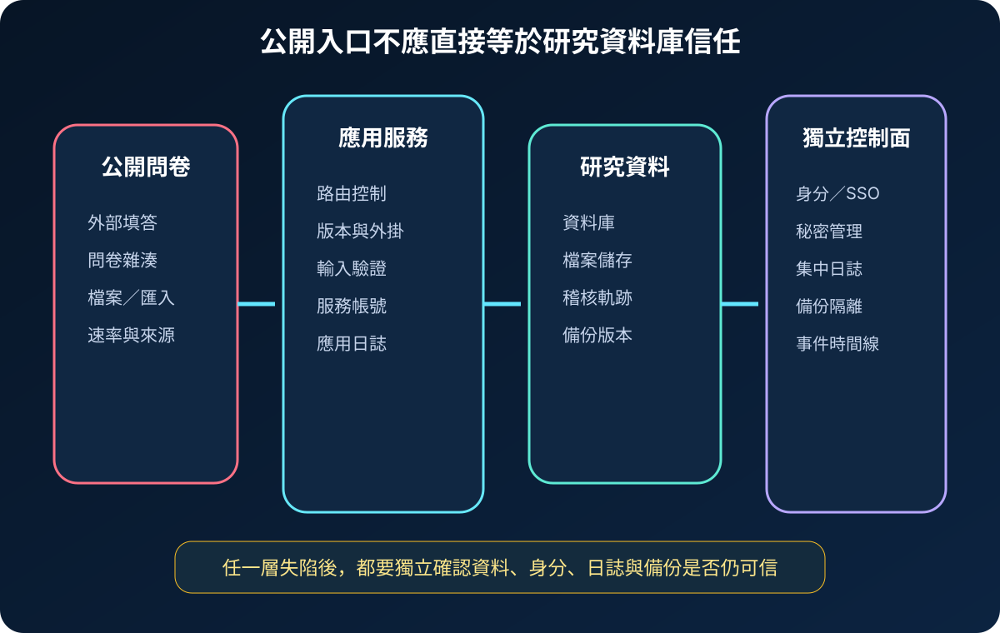
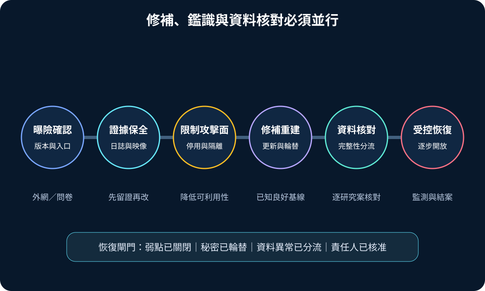
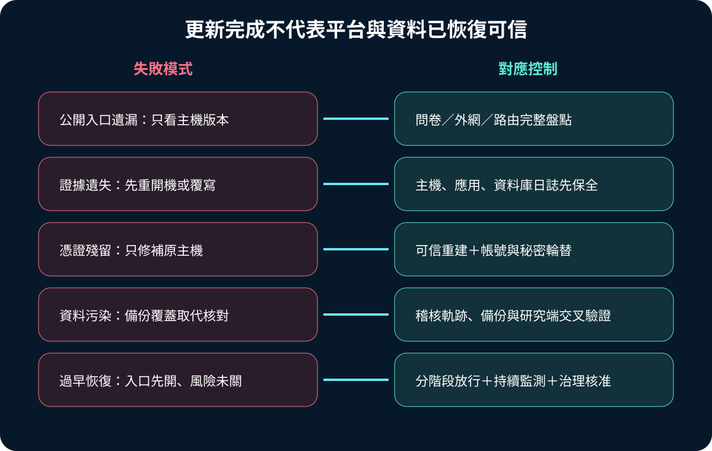

醫療資安國際觀察 · 2026-11-19
臨床研究平台遭主動利用時如何保住資料可信度：從隔離到重建
作者：Dr. William｜醫療資訊與資安治理實務工作者
研究資料平台出現已知遭利用漏洞時，處置不能只停在更新版本；還要確認公開入口、伺服器、帳號、匯入資料與研究結果是否仍可信。
名詞解釋：KEV、程式碼注入與研究資料完整性
KEV 是 CISA 已知遭利用漏洞目錄，代表已有實際利用證據；程式碼注入是攻擊者讓系統執行非預期程式碼；研究資料完整性則要求受試者資料、欄位定義、稽核軌跡、匯入匯出及分析版本可追溯且未被未授權修改。平台可用不等於資料可信。
國際現況與適用邊界
CISA 於 2026 年 11 月 18 日將 CVE-2026-90817 納入 KEV。目錄說明 REDCap 存在程式碼注入漏洞，未驗證攻擊者可能透過公開問卷情境、特製 HTTP 請求及資料匯入參數在伺服器執行任意程式碼，但需要知道有效的公開問卷雜湊值。CISA 對美國聯邦民事行政機關設定 2026 年 11 月 21 日處置期限，並要求依供應商指示及鑑識分流要求處理。該期限與 BOD 26-04 義務不直接適用台灣醫療或研究機構。
台灣適用原則：可把 KEV 視為主動利用訊號，立即盤點公開入口與受影響版本；實際修補、通報、個資事件判定、研究倫理、資料更正及服務恢復，仍須依台灣法規、主管機關、IRB 與院內程序確認。
規劃：把平台、研究案與資料流一起盤點
範圍至少涵蓋公開問卷、應用版本、網頁伺服器、資料庫、檔案儲存、單一登入、郵件、備份、API、匯入匯出工作與外掛。每一研究案需標示資料敏感度、公開連結、研究主持人、資料管理者、保存期限與可接受中斷。責任可由資訊單位處理隔離及重建，資安單位保存證據與定界，研究團隊核對資料，IRB／法遵判斷受試者與通報影響。
實作：六步完成處置與可信恢復
- 確認曝險：盤點版本、公開問卷、外網入口、網路路徑與相依服務。
- 保存證據：先保全網頁、應用、資料庫、身分與雲端日誌，再進行變更。
- 限制攻擊面：停用非必要公開功能，隔離可疑主機與高風險路徑。
- 修補重建：依供應商指示更新；無法證明主機可信時，改以已知良好基線重建並輪替秘密。
- 核對資料：比對稽核軌跡、備份與研究端紀錄，分流異常修改及可疑匯出。
- 受控恢復：先恢復必要研究，再逐步開放公開入口，持續監測並完成治理結案。

風險：更新完成不代表事件結束
常見失敗包括只看版本未盤點公開問卷、先重開機導致證據消失、只修補原主機未輪替金鑰、用備份覆蓋後忽略惡意修改、把研究資料異常當成一般 IT 工單，以及未確認外掛與整合帳號。緩解方式是保留獨立時間線、分離管理權限、以已知良好基線重建、逐案核對高敏感研究，並將未知範圍列為未關閉風險。

可執行清單
- 是否已建立所有 REDCap／研究資料平台的版本、院區、負責人與網路曝險清冊？
- 公開問卷連結與有效雜湊是否可能被外部索引、郵件轉寄或第三方保存？
- 網頁、應用、資料庫、身分、API 與雲端日誌是否已保全？
- 是否依供應商指示修補，並評估需重建而非原地更新的主機？
- 服務帳號、資料庫密碼、API 金鑰、郵件憑證與單一登入秘密是否輪替？
- 是否逐案核對高敏感研究的資料、稽核軌跡、匯出紀錄與分析版本？
- 恢復公開入口前，是否完成弱點重測、異常監測與研究治理核准？
來源
- CISA｜Known Exploited Vulnerabilities Catalog：CVE-2026-90817（納入：2026-11-18；查閱：2026-11-19）
- CISA｜BOD 26-04: Prioritizing Security Updates Based on Risk（查閱：2026-11-19）
- NIST NVD｜CVE-2026-90817（查閱：2026-11-19）
- REDCap｜Community resources（供應商資源；查閱：2026-11-19）
內容說明
本文依健康台灣深耕計畫相關治理內容整理，並參考 CISA、NIST 與 REDCap 官方資料，說明臨床研究平台遭主動利用時的曝險盤點、鑑識、修補、資料核對與可信恢復；不把美國聯邦期限視為台灣法定義務，也不取代主管機關規範、IRB 判定、個資事件評估、研究資料管理或法律意見。